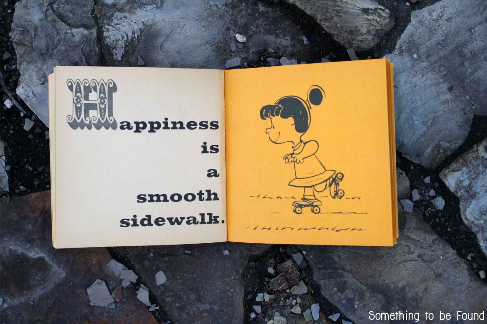
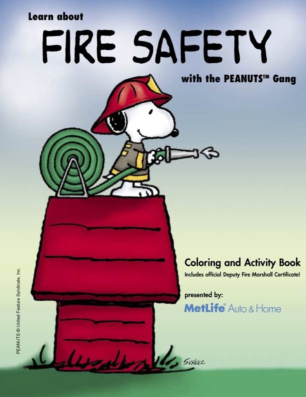
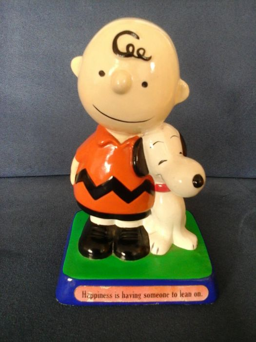

R release names (Updated)
I always love discussions about R release names and their origin. I have been working on this list for a while – with the release of “Short Summer” today, I thought it’d be a good time to post!
All of the release names are references to Peanuts strips/films. I think this is just so delightful! A few months ago, I attempted to get permission to embed the strips on our blog, but unfortunately it was denied (unless with a limited audience and password protection r emo::ji("woman_shrugging")), so I’ve just linked to the comics – Enjoy!
r-devel (unreleased development version) Unsuffered Consequences
Reference: Peanuts August 17, 1967
2.14.0 (2011-10-31) Great Pumpkin
Reference: Peanuts October 29, 1973
2.14.1 (2011-12-22) December Snowflakes
Reference: A Charlie Brown Christmas
This is very close to the Peanuts January 5, 1960, however they mention January snowflakes rather than December. The “December Snowflakes” quote is from A Charlie Brown Christmas.
2.14.2 (2012-02-29) Gift-Getting Season
Reference: This is a line Lucy says in the short film It’s the Easter Beagle, Charlie Brown! – referring to Easter as the “gift-getting season”.
2.15.0 (2012-03-30) Easter Beagle
Reference: Peanuts April 11, 1971
This also likely references the It’s the Easter Beagle, Charlie Brown!.
2.15.1 (2012-06-22) Roasted Marshmallows
Reference: Peanuts June 6, 1987
2.15.2 (2012-10-26) Trick or Treat
Reference: Peanuts October 31, 1969
2.15.3 (2013-03-01) Security Blanket
Reference: Peanuts October 23, 1965
3.0.0 (2013-04-03) Masked Marvel
Reference: Peanuts June 23, 1981
Edit: Got some insider info from the source himself that this is from Charlie Brown and Snoopy Show!
Source MoviesAfterMidnight
3.0.1 (2013-05-16) Good Sport
Reference: You’re a Good Sport, Charlie Brown
This is likely from the film You’re a Good Sport Charlie Brown, however there Peanuts November 22, 1953 does refer to being a “Good Sport” as well!
3.0.2 (2013-09-25) Frisbee Sailing
Reference: Peanuts September 3, 1971
3.0.3 (2014-03-06) Warm Puppy
There is also a book titled Happiness is a Warm Puppy.”)
Reference: Peanuts January 11, 1965
3.1.0 (2014-04-10) Spring Dance
Reference: Peanuts March 22, 1971
{kind=link}
3.1.1 (2014-07-10) Sock it to Me
Reference: This seems to be referring to a mini jigsaw puzzle, available on ebay!
Source MoviesAfterMidnight
3.1.2 (2014-10-31) Pumpkin Helmet
Reference: You’re a Good Sport, Charlie Brown
It’s a bit later in the clip, around 16:45.

Source Something to be Found’)
{kind=link}
3.1.3 (2015-03-09) Smooth Sidewalk
Reference: This is a page from the Happiness is a Warm Puppy book.
3.2.0 (2015-04-16) Full of Ingredients
Reference: Peanuts April 7, 1966
3.2.1 (2015-06-18) World-Famous Astronaut
Reference: Peanuts March 10, 1969

Source Business Wire’)
{kind=link}
3.2.2 (2015-08-14) Fire Safety
Reference: It seems that MetLife created a Peanuts themed Fire Saftey Brochure coloring and activity book.
3.2.3 (2015-12-10) Wooden Christmas-Tree
Reference: This is a line from A Charlie Brown Christmas – Linus says “Gee, I didn’t know they still made wooden Christmas trees”.
3.2.4 (2016-03-11) Very Secure Dishes
Reference: Peanuts February 20, 1964
3.2.5 (2016-04-11) Very, Very Secure Dishes (a rebadged 3.2.4-revised)
I assume this is still a reference to Peanuts February 20, 1964
3.3.0 (2016-05-03) Supposedly Educational
Reference: Peanuts May 7, 1971
3.3.1 (2016-06-21) Bug in Your Hair
Reference: Peanuts June 15, 1967
3.3.2 (2016-10-31) Sincere Pumpkin Patch
Reference: Peanuts Oct 30, 1968
3.3.3 (2017-03-06) Another Canoe
Reference: Peanuts June 29, 1966
3.4.0 (2017-04-21) You Stupid Darkness
Reference: Peanuts September 9, 1965
3.4.1 (2017-06-30) Single Candle
Reference: Peanuts September 9, 1965
3.4.2 (2017-09-28) Short Summer
Reference: It was a Short Summer, Charlie Brown
3.4.3 (2017-11-30) Kite-eating Tree
Reference: Peanuts February 19, 1967
Peter Dalgaard made a gif to commemorate the momentous occasion!

Source catawiki auctions’)
{kind=link}
3.4.4 (2018-03-15) Someone to Lean On
Reference: Peanuts Figurine (1971). There are a couple of different versions of this, some with Charlie Brown and Snoopy, one with Linus and Snoopy, and one with Woodstock and Snoopy. Many of them were Hallmark cards, but there was also a badge and this figurine. The oldest (dated) one I could find was this one from 1971, so we went with that!
{kind=link}
An update from Peter!
Yup. Incidentally, I believe this one was the inspiration for 3.4.4 (also, a discreet epitaph to my stepdad.) As you note, there are variants, but this is graphically the nicest in my opinion. pic.twitter.com/6syXNAJRrC
— Peter Dalgaard (@pdalgd) July 3, 2018
3.5.0 (2018-04-23) Joy in Playing
Reference: Peanuts January 27, 1973
3.5.1 (2018-07-02) Feather Spray
Reference: Peanuts March 9, 1972
Looks like we have some validation (thanks Peter!) – I’ve updated the Masked Marvel accordingly r emo::ji("tada").
Mostly on target. A few are from films/badges rather than strips. Notably Masked Marvel from the unforgettable arm-wrestling w/Lucy.
— Peter Dalgaard (@pdalgd) September 28, 2017